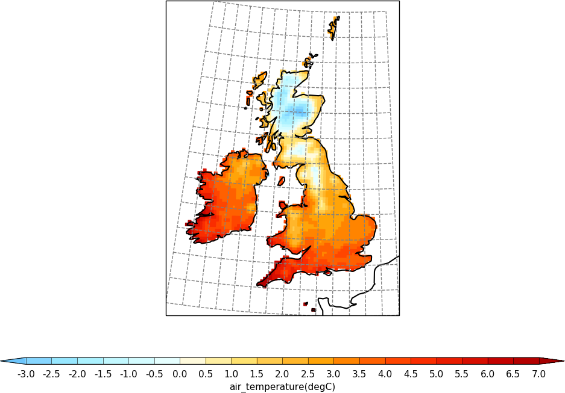
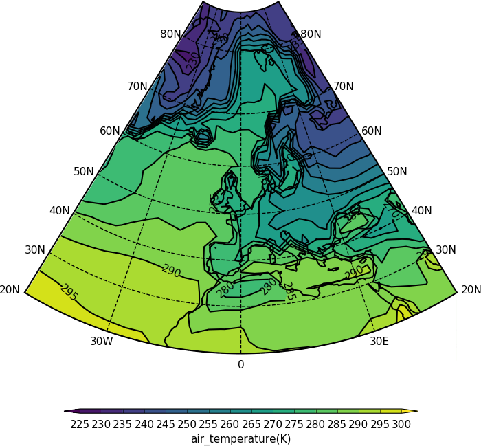
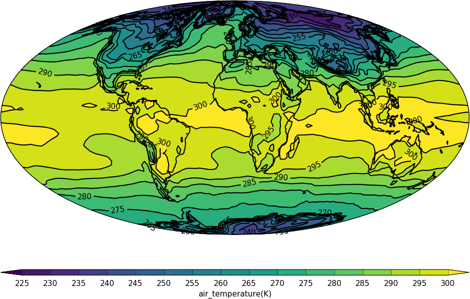

Projections in cf-plot¶
The cylindrical and polar stereographic projections are detailed separately in http://ajheaps.github.io/cf-plot/cylindrical.html and http://ajheaps.github.io/cf-plot/polar.html.
Example 31 - UKCP projection¶

import cf, cfplot as cfp
f=cf.read('cfplot_data/ukcp_rcm_test.nc')[0]
cfp.mapset(proj='UKCP', resolution='50m')
cfp.levs(-3, 7, 0.5)
cfp.con(f, lines=False)
cf-plot looks for auxiliary coordinates of longitude and latitude and uses them if found. If they aren’t present then cf-plot will generate the grid required using the projection_x_coordinate and projection_y_coordinate variables. For a blockfill plot as below it uses the latter method and the supplied bounds.
Example 32 - UKCP projection with blockfill¶
New cfp.setvars options affecting the grid plotting for the UKCP grid are:
grid=True - draw grid
grid_spacing=1 - grid spacing in degrees
grid_lons=None - grid longitudes
grid_lats=None - grid latitudes
grid_colour=’grey’ - grid colour
grid_linestyle=’–’ - grid line style
grid_thickness=1.0 - grid thickness
Here we change the plotted grid with grid_lons and grid_lats options to cfp.setvars and make a blockfill plot.
{kind=link}
import cf, cfplot as cfp
import numpy as np
f=cf.read('cfplot_data/ukcp_rcm_test.nc')[0]
cfp.mapset(proj='UKCP', resolution='50m')
cfp.levs(-3, 7, 0.5)
cfp.setvars(grid_lons=np.arange(14)-11, grid_lats=np.arange(13)+49)
cfp.con(f, lines=False, blockfill=True)
Example 33 - OSGB and EuroPP projections¶

import cf, cfplot as cfp
f=cf.read('cfplot_data/ukcp_rcm_test.nc')[0]
cfp.levs(-3, 7, 0.5)
cfp.gopen(columns=2)
cfp.mapset(proj='OSGB', resolution='50m')
cfp.con(f, lines=False)
cfp.gpos(2)
cfp.mapset(proj='EuroPP', resolution='50m')
cfp.con(f, lines=False)
cfp.gclose()
Example 34 - Cropped Lambert conformal projection¶
{kind=link}
Lambert conformal projections can now be cropped as in the following code:
import cf, cfplot as cfp
f=cf.read('cfplot_data/tas_A1.nc')[0]
cfp.mapset(proj='lcc', lonmin=-50, lonmax=50, latmin=20, latmax=85)
cfp.con(f.subspace(time=15))
Example 35 - Mollweide projection¶
{kind=link}
import cf, cfplot as cfp
f=cf.read('cfplot_data/tas_A1.nc')[0]
cfp.mapset(proj='moll')
cfp.con(f.subspace(time=15))
Example 36 - Mercator projection¶

import cf, cfplot as cfp
f=cf.read('cfplot_data/tas_A1.nc')[0]
cfp.mapset(proj='merc')
cfp.con(f.subspace(time=15))
Example 37 - Orthographic projection¶

import cf, cfplot as cfp
f=cf.read('cfplot_data/tas_A1.nc')[0]
cfp.mapset(proj='ortho')
cfp.con(f.subspace(time=15))
Example 38 - Robinson projection¶

import cf, cfplot as cfp
f=cf.read('cfplot_data/tas_A1.nc')[0]
cfp.mapset(proj='robin')
cfp.con(f.subspace(time=15))